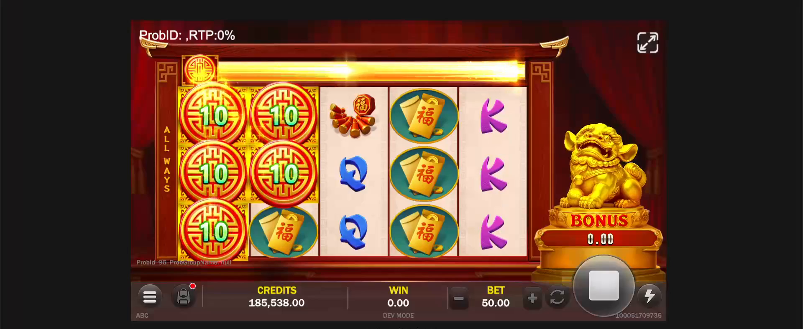

🎰 老虎機 AI 開發競賽 — 最終成果報告
6 Agent
從藍圖到成果
主題：新一代福星高照（翻新既有機台）
6 個職能 Agent 實戰跑完一輪製程 — 企劃→美術→音效→Client→Server→機率
核心策略：AI 跑流程、人工審核把關
① 知識收集 ✓
→
② 基礎建設 ✓
→
③ 實戰開發 ✓
▶ 按 → 翻頁
Executive Summary
一頁看懂這次競賽成果
6
職能 Agent 全數上線運作
1
完整老虎機 Demo（福星高照）
3 階段
知識收集→建置→實戰，全完成
1 → N
為複製而設計（下一台驗證）
做了什麼
為 6 個職能各建一個 AI Agent，以一台既有機台翻新為場景，跑通完整開發製程。
怎麼做
AI 跑流程、人工審核把關；串行流程改為多職能平行，搭配記憶與自動學習迴路。
價值
不只一台 Demo，而是為複製而設計、Agent 持續累積的 Agent 製程框架（複製效益與效率量化待第二台驗證）。
Problem & Goal
為什麼做：痛點與目標
🔥 欲解決的開發痛點
• 重複性高 — 每台新機台都要重做類似的規格、素材、數值
• 知識散落 — 競品分析、舊規格經驗、美術建議散落各處，難以傳承複用
• 迭代效率 — 修改調整需大量人工重複操作
• 知識散落 — 競品分析、舊規格經驗、美術建議散落各處，難以傳承複用
• 迭代效率 — 修改調整需大量人工重複操作
🎯 我們的目標
• 選定主題：新一代福星高照（翻新既有機台）
• 用既有 Code / 素材為基底，專注驗證 AI 製程
• 為 6 職能各建一個具完整知識庫的 Agent
• 建立可複製到其他機台的框架
• 用既有 Code / 素材為基底，專注驗證 AI 製程
• 為 6 職能各建一個具完整知識庫的 Agent
• 建立可複製到其他機台的框架
核心策略：AI 跑流程、人工做品質審核把關
Agent 負責產出，人專注在審核與決策
System Architecture
系統架構：完整技術架構
接入層
Ingress各職能人員Telegram BotDiscord BotCLI / 終端
編排層
Orchestration · OpenClaw多 Agent 路由 Gateway6 職能 Agent👀 人工審核節點排程 / 權限隔離⚡ 自動生成 Skill
模型層
LLM & Models雲端·主腦GPT-5.5備援Kiro Opus 4.6雲端·程式Claude Opus 4.8雲端Gemini 3 Pro本地·vLLMQwen3.6本地Embedding本地Reranker
記憶與知識層
Memory & Knowledgememory-lancedb-pro（各 Agent scope 向量庫）學習迴路 · 對話即更新各職能知識庫
工具層
ToolingMCPCocos · SpineCLIcodex-imagegen · ElevenLabs · SunoAPI生成式服務瀏覽器自動化
治理層
Governance權限分級（讀/寫/執行）資安 · 操作日誌📊 職責審計儀表板💓 健康度監控儀表板
六層由上而下協作：人員下指令 → OpenClaw 編排 6 Agent → 調用雲端/本地模型 → 讀寫記憶與知識 → 操作工具產出 → 全程權限與監控治理
Model Orchestration
模型協作：每個任務，配最適合的模型
🧠 推理與決策
雲端 LLM ·「想」
雲端 LLM ·「想」
• GPT-5.5 — Agent 主腦（備援：Kiro Opus 4.6）
• Claude Opus 4.8 — 程式碼規劃與開發（長思考）
• Gemini 3 Pro — 輔助規格發想（多觀點）
• Claude Opus 4.8 — 程式碼規劃與開發（長思考）
• Gemini 3 Pro — 輔助規格發想（多觀點）
📚 記憶與檢索
本地 vLLM ·「記」
本地 vLLM ·「記」
• Qwen3-Embedding — 知識向量化
• Reranker — 相關度重排
• Qwen3.6 — 把檢索到的知識濃縮成重點，餵回主模型參考
• Reranker — 相關度重排
• Qwen3.6 — 把檢索到的知識濃縮成重點，餵回主模型參考
🎨 生成
素材模型 ·「做」
素材模型 ·「做」
• codex-imagegen / GPT Image — 美術生圖、修圖
• ElevenLabs / Suno — 音效、配樂
• 產出素材再經 Spine · PS · Cocos · 3D 等工具整合落地
• ElevenLabs / Suno — 音效、配樂
• 產出素材再經 Spine · PS · Cocos · 3D 等工具整合落地
本地檢索知識
→
雲端 LLM 推理決策
→
需要素材→調生成模型
→
👀 人工審核
→
✓ 產出
雲端負責想、本地負責記、生成模型負責做素材 —— 依任務分工，並隨時換上最新最強模型
Evidence · 1/2
實證①：做出來了 — 福星高照 Demo

🎰
福星高照 Demo 實機畫面
遊戲執行中的畫面：主場景 / 轉動 / 重要演出（FreeSpin、得獎、轉場）。可橫排 2–3 張。
存成 assets/demo-fuxing.png
🎉 這是成果本體
由 6 職能 Agent 協作產出的一台可運行老虎機 —— 規格、美術、音效、程式、機率全部跑過 AI 製程＋人工審核。
Evidence · 2/2
實證②：治理 — 雙儀表板即時掌握


一個看「Agent 在做什麼」、一個看「系統健不健康」 —— 治理層實際落地
Technical Highlights
技術實作亮點
🧠 記憶 + 學習迴路
記住歷次修正、跨 Agent 共享上下文、交付前自檢，越用越準的正向循環。
⚡ 自動生成 Skill
對話即更新，Agent 自動把經驗變成可執行能力模組，打破手動維護知識庫的舊模式。
🛠 AI 工具鏈
每個 Agent 配置專屬生成式／自動化工具，以 MCP・CLI・API・瀏覽器自動化操作。
🔒 多用戶 × 權限隔離
一個 Agent 同時服務多位使用者，各自獨立：分級授權（讀/寫/執行）、per-user Git 權限、資料與操作日誌逐人隔離。
📊 雙儀表板
職責審計（使用狀況/缺口）＋ 健康度監控（即時告警）。
🚀 可擴展設計
新增 Agent 只需灌知識 + 設工具鏈，不動核心。
How We Delivered
三階段如何落地（已完成）
① 知識收集 ✓
從既有專案萃取框架、共用模組、規格書、Code，建立各職能初版知識庫。
對話即更新，使用中持續補充。
對話即更新，使用中持續補充。
② 基礎建設 ✓
知識灌入、SOP 量化為規則、配置工具鏈、建立記憶與學習迴路。
產出 6 個可運作 Agent + 權限/資安/監控。
產出 6 個可運作 Agent + 權限/資安/監控。
③ 實戰開發 ✓
Agent 實際跑福星高照製程、人工審核迭代、監控優化。
產出 可運行 Demo + 優化後配置。
產出 可運行 Demo + 優化後配置。
4/09–5/08
①② 規劃期：知識收集 + Agent 基礎建設
6 Agent 初版建置完成（提前達成）
5/08
📋 規劃藍圖繳交
5/09–6/30
③ 開發期：實戰開發 + 持續優化
Agent 跑製程、人工審核迭代、知識持續更新、Demo 整合
6/30
🏆 最終成果繳交 — 本報告
Results by Function
各職能實戰成果
6 職能各自的能力與實際產出，由各職能負責人提供連結，深入展示成果與 Before/After。
各連結待各職能補上（簡報、Demo、產出物或成果頁）
What's Next
未來展望
🎰
本次競賽
翻新既有老虎機一台，跑通並驗證製程
🚀
短期延伸
複製到第二台機台；新增 PM 主 Agent（判斷產品成功性、調度各職能 Agent 開發）與 品檢 Agent（自動化測試）
🎣
長期願景
套用到捕魚機 / 平台活動
🚀 框架進化能力
• 職責審計儀表板 → 偵測需求缺口決定何時新增 Agent
• 健康度監控儀表板 → 問題即時發現，不影響使用者體驗
• 自動生成 Skill → Agent 越用越強，無需人工維護知識
• 模組化擴展 → 新增 Agent 只需灌知識 + 設工具鏈，不動核心
• 健康度監控儀表板 → 問題即時發現，不影響使用者體驗
• 自動生成 Skill → Agent 越用越強，無需人工維護知識
• 模組化擴展 → 新增 Agent 只需灌知識 + 設工具鏈，不動核心